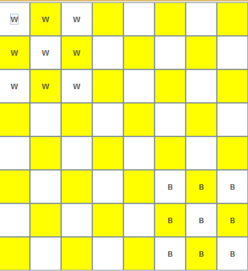

<!doctype html>
<html>
	<head>
		<meta charset="utf-8">
		<meta name="viewport" content="width=device-width, initial-scale=1.0, maximum-scale=1.0, user-scalable=no">

		<title>Композиция и наследование</title>

		<link rel="stylesheet" href="../dist/reset.css">
		<link rel="stylesheet" href="../dist/reveal.css">
		<link rel="stylesheet" href="../dist/theme/beige.css" id="theme">

		<!-- Theme used for syntax highlighted code -->
		<link rel="stylesheet" href="../plugin/highlight/github.css" id="highlight-theme">
		<style>
			.container{
				display: flex;
			}
			.col{
				flex: 1;
			}
		</style>
	</head>
	<body>
		<div class="reveal">
			<div class="slides">
                <section data-markdown data-separator="!~~~!" data-separator-vertical="~~~" > 
<script type="text/template">

## Наследование

~~~

### Разрабатываемая игра

#### Уголки



~~~

### Идея

Реализуем игру в два слоя:
- универсальные классы для игр на шахматной доске 
	- более абстрактный слой;
- классы для конкретных игр 
	- более конкретный слой.

Преимущества подхода:
- разделение задачи на части;
- повторное использование кода.

~~~

### Пример

[https://github.com/AltmanEA/game](https://github.com/AltmanEA/game)

Каталог d_inheritance

!~~~!

## Иерархия классов для состояния

~~~

### Общее состояние

<pre class="kotlin"><code>
open class State (
	val squares: Array< String > = Array(64){" "}
){
	fun move(from:Int, to:Int): State =
		State(squares.clone()).apply {
			squares[to] = squares[from]
			squares[from] = " "
		}
	
	operator fun get(index: Int)= squares[index]
}
</code></pre>

~~~

### Состояние для первой игры

<pre class="kotlin"><code>
class FoxState(
	fox: Int = 60,
	hounds: Array< Int > = arrayOf(1, 3, 5, 7)
) : State(
	Array(64){
		when {
			it == fox -> "F"
			hounds.contains(it) -> "H"
			else -> " "
		}
	}
)
</code></pre>

~~~

### Состояние для второй игры

<pre class="kotlin"><code>
class CornerState (
	white: Array< Int > = 
		arrayOf(0, 1, 2, 8, 9, 10, 16, 17, 18),
	black: Array< Int > = 
		Array(white.size){63-white[it]}
) : State(
	Array(64){
		when {
			white.contains(it) -> "W"
			black.contains(it) -> "B"
			else -> " "
		}
	}
)
</code></pre>


!~~~!

## Иерархия классов управления

~~~

### Общий контроллер

<pre class="kotlin"><code>
open class Controller(
	var state: State
) {
	val view = View(this)
	var checkedCell: Int? = null
	
	fun onClick(index: Int) {...}

	fun step(from: Int, to: Int) = ...
	
	open fun possibleMoves(shape: String, from: Int) =
		Array(64){it}
}
</code></pre>

~~~

### Функция шага

<pre class="kotlin"><code>
	fun step(from: Int, to: Int) =
		if (possibleMoves(state[from], from).contains(to))
			state.move(from, to)
		else
			null
</code></pre>

~~~

### Функция хода

<pre class="kotlin"><code>
fun onClick(index: Int) {
	if (checkedCell == null) 
		checkedCell = index
	else {
		step(checkedCell!!, index)?.let {
			state = it
		}
		checkedCell = null
	}
	view.update()
}
</code></pre>

~~~

### Контроллер первой игры

<pre class="kotlin"><code>
class FoxController : Controller(FoxState()){
	override fun possibleMoves(shape: String, from: Int) =
		when(shape){
			"F" -> arrayOf(from-7, from-9)
			"H" -> arrayOf(from+7, from+9)
			else -> arrayOf()
		}
}
</code></pre>

~~~

### Контроллер второй игры

<pre class="kotlin"><code>
class CornerController : Controller(CornerState()) {
	val nextCell = arrayOf(-7, -8, -9, -1, 1, 7, 8, 9)
	
	override fun possibleMoves(shape: String, from: Int) =
		ArrayList< Int >().apply {
			for (next in nextCell)
				(checkCell(from + next)
					?: checkCell(from + 2 * next))
					?.let {
						add(it)
					}
		}.toTypedArray()
</code></pre>

~~~

### Контроллер второй игры (проверка ячейки)

<pre class="kotlin"><code>
	fun checkCell(cell: Int) =
		if ((cell >= 0) and (cell < 64))
			if (state[cell] == " ")
				cell
			else null
		else null
</code></pre>


</script>
                </section>

			</div>
		</div>

		<script src="../dist/reveal.js"></script>
		<script src="../plugin/notes/notes.js"></script>
		<script src="../plugin/markdown/markdown.js"></script>
		<script src="../plugin/highlight/highlight.js"></script>
		<script src="../plugin/audio-slideshow/plugin.js"></script>
		<script src="../plugin/audio-slideshow/recorder.js"></script>
		<script src="../plugin/audio-slideshow/RecordRTC.js"></script>
		<script src="../plugin/menu/menu.js"></script>
		<script>
			Reveal.initialize({
				hash: true,
				width: '90%',
    			height: '100%',
				// Learn about plugins: https://revealjs.com/plugins/
				// plugins: [ RevealMarkdown, RevealHighlight, RevealNotes, RevealAudioSlideshow, RevealAudioRecorder, RevealMenu ],
				// audio: {
				// 	prefix: 'audio/',
				// 	suffix: '.webm;codecs=opus',
				// 	autoplay: false,
				// 	advance: -1,
				// },
				plugins: [ RevealMarkdown, RevealHighlight, RevealNotes, RevealMenu ],
				menu: {
					custom: [{
						title: 'Home',
						icon: '<i class="fa fa-home">',
						src: '../menu.html'
					}]
				}
			});
		</script>
	</body>
</html>
